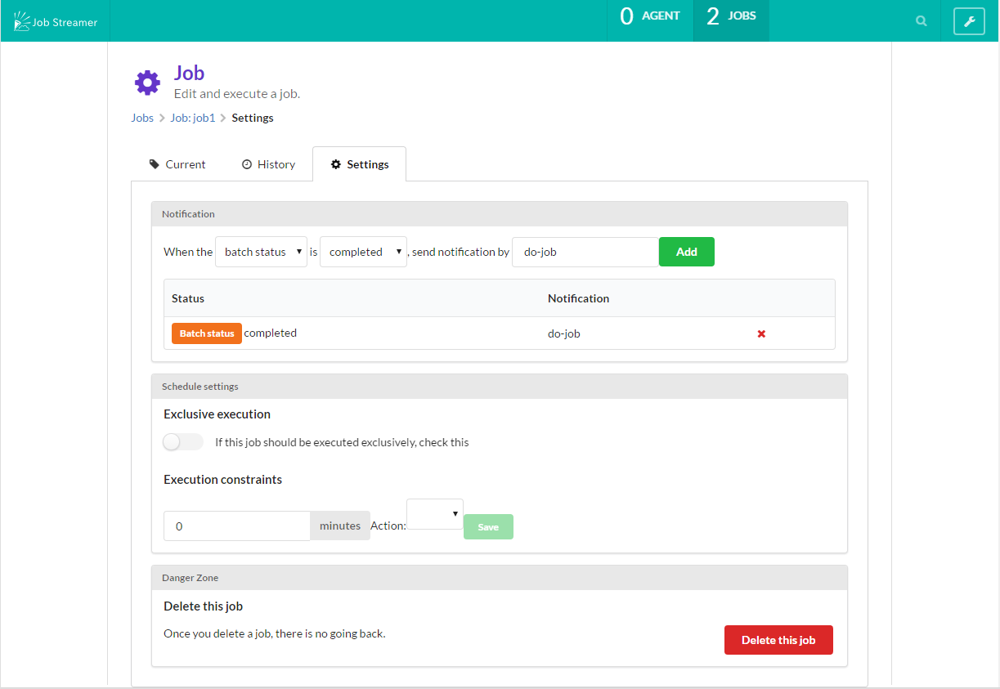

ジョブの設定
ジョブの同時起動制御
ジョブを同時に実行すると都合の悪い場合があります。同時実行をさせないためには、ジョブのSettingsタブでExclusive
executionをオンにしてください。
ジョブの監視
同じくSettingsタブで監視の設定が可能です。

バッチステータス、終了ステータスの値に応じてメールを送信する
Batch statusの場合は、プルダウンからステータスを選択します。Exit
statusの場合は、ステータスを入力してください。
そして通知内容を設定しますが、これは通知サーバに設定した通知項目のキーを入力してください。
一定時間以上ジョブが実行されていたらメールを送る
Execution constraints
で経過分数を入力し、プルダウンでAlertを選択してください。
通知内容の設定は、通知サーバに設定した通知項目のキーを入力してください。
一定時間以上ジョブが実行されていたらジョブを停止する
Execution constraints
で経過分数を入力し、プルダウンでStopを選択してください。